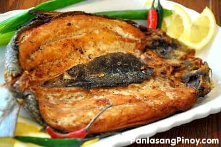

Bangus

Ingredients
- 1 Boneless bangus scales removed, cleaned and butterflied
- 1/2 cup white vinegar
- 4 cloves garliccrushed
- 1/2 teaspoon whole peppercorn
- 1/2 teaspoon salt
- 1 cup cooking oil
Steps
- Combine vinegar, garlic, whole peppercorn, and salt in a bowl. Stir.
- In a deep wide plate, pour-in the mixture and then lay down the fish in a manner that the sliced part is facing down (skin should face up). Cover and place in the fridge. Marinate for 8 to 12 hours.
- Heat the cooking oil in a pan. Fry both sides of the bangus in medium heat until the color turns medium brown (note: it should take around 5 minutes per side). Note: the oil has a tendency to splatter because of the liquid from the marinade. Make sure to cover the pan while leaving open a small space for the steam to escape.
- Serve with spiced vinegar (sinamak)
- Share and enjoy!